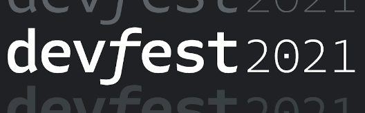
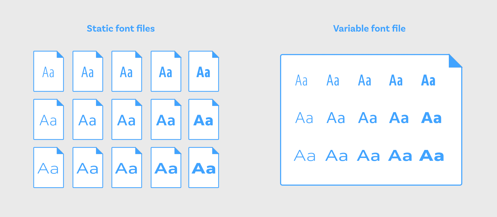

Сказ про вариативные шрифты
Сказ про вариативные шрифты
OpenType 1.8 или OT1.8 появился в 2016
Hello world!
Основные оси:
wghtwdthitalslntopszКастомных осей может быть сколько угодно. Они должны быть названы 4 буквами, но заглавными: SOFT, WONK, GRAD.
@font-face {
font-family: 'MyFont';
src: url('../fonts/link.woff2');
font-style: normal;
font-weight: 500;
}
...
@font-face {
font-family: 'MyFont';
src: url('../fonts/link-italic.woff2');
font-style: italic;
font-weight: 500;
}
...
@font-face {
font-family: 'MyFont';
src: url('../fonts/link-Thin.woff2');
font-style: normal;
font-weight: 100;
}
...
@font-face {
font-family: 'MyFont';
src: url('../fonts/link-italic-Extra-bold.woff2');
font-style: italic;
font-weight: 900;
}
...
@font-face {
font-family: 'MyFontVF';
src: url('../fonts/MyFontVF.woff2') format('woff2 supports variations'),
url('../fonts/MyFontVF.woff2') format('woff2-variations');
font-weight: 200 900;
font-stretch: 50% 200%;
}
body {
font-family: 'MyFont', sans-serif;
}
@supports (font-variation-settings: normal) {
body {
font-family: 'MyFontVF', sans-serif;
}
}
Основные оси:
wght — font-weightwdth — font-stretchital — font-styleslnt — font-styleopsz — font-optical-sizingfont-weightfont-stretchfont-stretchultra-condensed — 50%extra-condensed — 62.5%condensed — 75%semi-condensed — 87.5%normal — 100%semi-expanded — 112.5%expanded — 125%extra-expanded — 150%ultra-expanded — 200%font-stylefont-styleНЕ РАБОТАЕТ 🥺
font-optical-sizingНЕ РАБОТАЕТ 🥺
font-optical-sizingВозможные значения:
autononefont-variation-settings
font-variation-settingsfont-variation-settingsfont-variation-settingsfont-variation-settings 👎font-feature-settingsfont-kerningfont-language-overridefont-size-adjustfont-synthesisfont-variantfont-variant-alternatesfont-variant-capsfont-variant-east-asianfont-variant-ligaturesfont-variant-numericfont-variant-positionЯ в будущее смотрю с оптимизмом…
Noize MC
«Будем рады вашей обратной связи!»
Организаторы